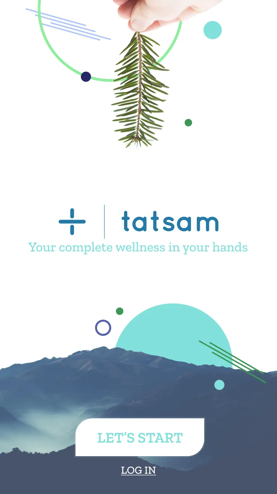
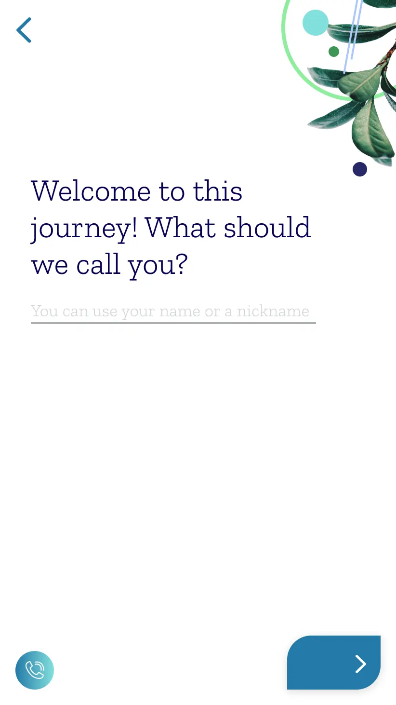
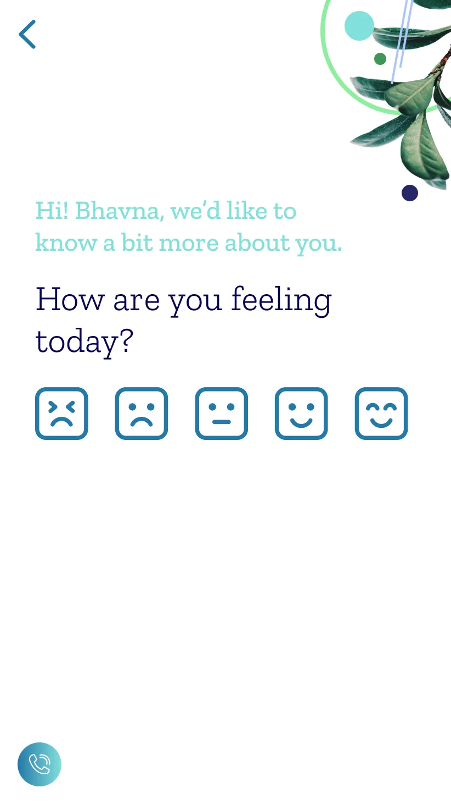
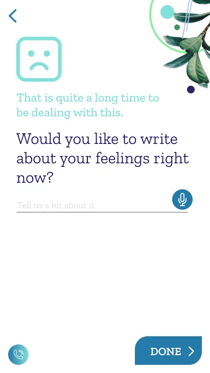
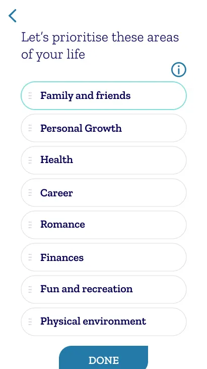
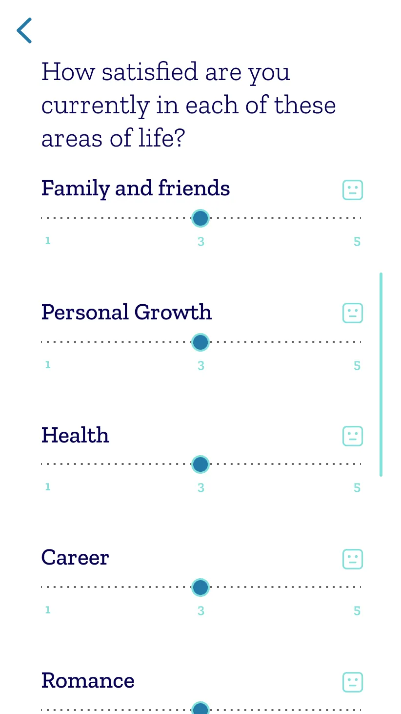
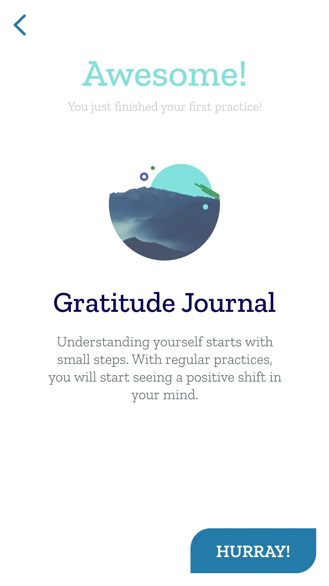

Opening the app

A pine branch. A mountain. Two buttons. I don't know why I was bracing.
— Bhavna
To show how the product feels to someone arriving for the first time, we've walked through it with Bhavna — a fictional user, based on the patterns Tatsam's team sees in real onboarding data. No real user's story is reproduced here. The screens on the left are what Bhavna sees. The notes on the right are the design decisions behind each one — written small, because the product's job is to disappear.
— Joyus Studio

A pine branch. A mountain. Two buttons. I don't know why I was bracing.
— Bhavna

It said nickname. I wasn't ready for my real name. I typed the one my sister uses.
— Bhavna

Five faces. Not a slider. I picked the one in the middle. I didn't have to decide if it was a three or a four.
— Bhavna

It didn't tell me I was in crisis. It didn't offer me a hotline. It asked if I wanted to write about it. I didn't, and that was also fine.
— Bhavna


First they asked me to put them in order. Family first. Work further down than I expected. Then, only after I'd ordered them, they asked how satisfied I was in each — one to five. By then I'd already decided which ones I cared about. The scores were for me, not for a diagnosis.
— Bhavna

Awesome. Hurray. It was a little too cheerful. But I noticed I wasn't bracing anymore.
— Bhavna
what Joyus made
Brand — a belief, a voice, and a logo whose plus-sign is a softer way of showing care.
Visual language — teals and deep indigo, cutout botanicals, dusk-mountain photography, hand-drawn overlays.
Product — the onboarding above, co-designed with psychologists: name, feeling, life-areas, a first practice.
B2B research reports — the dashboards Tatsam's employer clients read — analytical, quiet, never alarmist.